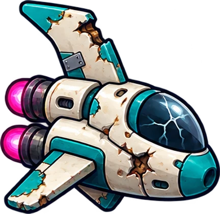

LOST IN SPACE. STILL MOVING.
Small explorer.
Big universe.
Explore. Survive. Discover. Find home.
Every world is a story. Choose yours.
Freeplay saves in this browser. An account keeps a separate adventure.
AN EXTREMELY LONG WAY FROM HOME
Same sky.
New story.
Level 1 explorer0 / 100 XP
Six missing parts.
A galaxy of bad directions.

Where will you drift?
13 SYSTEMS · 36 PLANETSEvery system is open. Five stages per world. Follow a signal, chase rare gear, or simply get lost.
Pick a planet. See what happens.
SUIT INTEGRITY 100 / 100
Tap a threat to focus Dot
DOT / COMPANION LINK
“I’m almost certain home is one of these.”
✧
DOT · EXPLORING
MISPLACING ONE ASTRONAUT
Finding the galaxy…
Packing snacks and questionable potions.